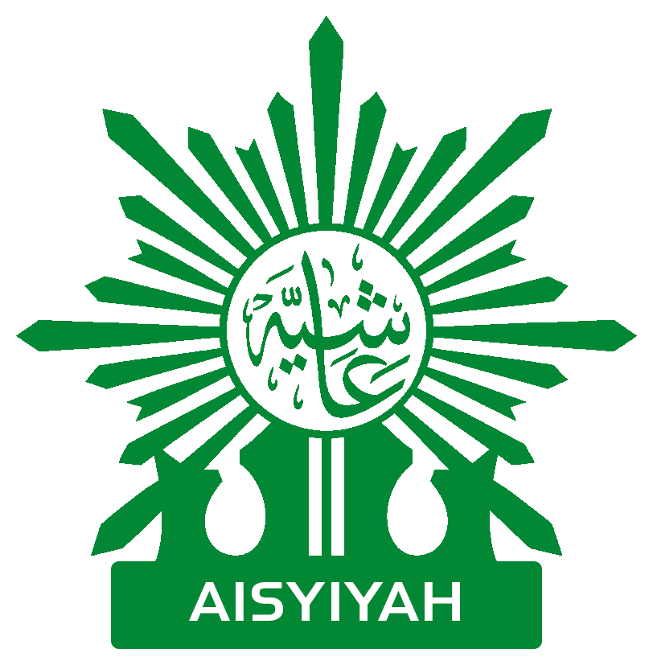
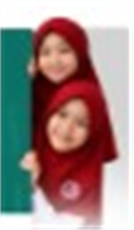

Berdirinya ‘Aisyiyah
Gerakan Bustanul Athfal bermula dari ‘Aisyiyah, organisasi perempuan Muhammadiyah yang berdiri pada tahun 1917.

TK Bustanul Athfal 'Aisyiyah Pacitan
Pendidikan Anak Usia Dini
Pendidikan anak usia dini yang menumbuhkan generasi berakhlak, mandiri, cerdas, kreatif, dan ceria melalui metode belajar sambil bermain.
Pendidikan anak usia dini merupakan fondasi penting dalam perjalanan hidup anak. Di TK Bustanul Athfal, kami berkomitmen menciptakan lingkungan belajar yang aman, menyenangkan, dan penuh kasih sayang. Kami percaya bahwa setiap anak memiliki potensi unik yang patut dikembangkan. Melalui metode saintifik serta Learning Through Play, kami menanamkan nilai-nilai keagamaan, kemandirian anak sejak dini agar mereka siap melangkah ke masa depan dengan percaya diri.
Gerakan Bustanul Athfal bermula dari ‘Aisyiyah, organisasi perempuan Muhammadiyah yang berdiri pada tahun 1917.
‘Aisyiyah membuka pendidikan anak usia dini yang saat itu bernama Frobel, dikenal sebagai taman kanak-kanak pertama yang didirikan bangsa Indonesia.
Nama lembaga diseragamkan menjadi TK ‘Aisyiyah Bustanul Athfal. Pada 13 Maret 1973, TK Bustanul Athfal ‘Aisyiyah Pacitan berdiri, dirintis oleh para pengurus awal ‘Aisyiyah Pacitan di bawah naungan Pimpinan Daerah ‘Aisyiyah Kabupaten Pacitan.
Kegiatan belajar berlangsung di dua gedung, yaitu Jl. H. Samanhudi No.05 dan Jl. K.H. Dimyati No.19, Pacitan, dengan Program Madrasah Unggul: Unggul Religius, Unggul Kreatifitas, dan Unggul Genius. Bersama para pendidik dan orang tua, sekolah berkomitmen mewujudkan generasi yang berakhlak mulia, sehat, mandiri, cerdas, dan kreatif.
- Penguatan Karakter
Islam & Keislaman/Kemuhammadiyahan
- Pembelajaran Holistik Berbasis "Merdeka Bermain"
(Learning through Play)
- Kemandirian, Seni, dan Bakat Anak
(Life Skills & Talents)

Mewujudkan generasi yang berakhlak mulia, sehat, mandiri, cerdas dan kreatif.
Tim pendidik kami siap mendampingi tumbuh kembang setiap anak dengan penuh kasih sayang.
![Foto [Nama Guru 1], Guru Kelas A](images/guru-1.jpg)
![Foto [Nama Guru 2], Guru Kelas B](images/guru-2.jpg)
![Foto [Nama Guru 3], Guru Kelompok Bermain](images/guru-3.jpg)
![Foto [Nama Guru 4], Guru Pendamping](images/guru-4.jpg)
![Foto [Nama Guru 5], Guru Pendamping](images/guru-5.jpg)
![Foto [Nama Guru 6], Guru Al-Qur'an & Karakter](images/guru-6.jpg)
![Foto [Nama Guru 7], Staf Tata Usaha](images/guru-7.jpg)
![Foto [Nama Guru 8], Penjaga Sekolah](images/guru-8.jpg)
| WAKTU | KEGIATAN | KETERANGAN |
|---|---|---|
| 07.00 – 07.30 | Kedatangan & pembiasaan | Menyambut anak, pembiasaan senyum salam sapa, dan doa pagi |
| 07.30 – 09.00 | Kegiatan pembelajaran | Sentra / area bermain edukatif & pembelajaran aktif |
| 09.00 – 09.30 | Istirahat & makan bersama | Cuci tangan, makan bekal sehat bersama, & bermain bebas |
| 09.30 – 10.00 | Penutup & doa pulang | Evaluasi kegiatan harian, bernyanyi, doa, & penjemputan |
"Alhamdulillah, anak saya sangat senang dan antusias bersekolah di TK 'Aisyiyah. Guru-gurunya sangat sabar, ramah, dan telaten membimbing anak-anak."
— Bunda Alvaro (Kelompok B)
"Metode belajarnya sangat menyenangkan dan menumbuhkan rasa percaya diri anak. Pembiasaan sholat dan doa hariannya terbawa sampai di rumah."
— Ayah Rayyan (Kelompok A)
"Fasilitas sekolah lengkap dan lingkungannya sangat aman serta nyaman. Anak saya jadi lebih mandiri, kreatif, dan berakhlak baik."
— Bunda Zaskia (Kelompok Bermain)
Gedung 1: Jl. H. Samanhudi No.05, Pacitan.
Gedung 2: Jl. K.H. Dimyati No.19, Pacitan.